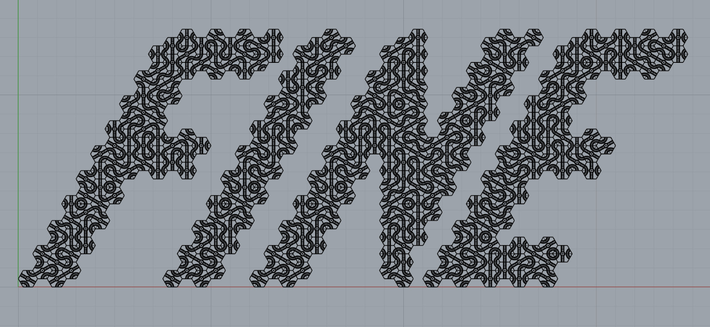
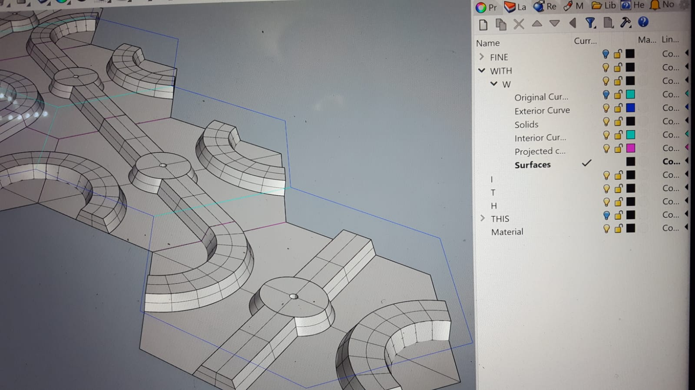

Fine With This is a work-in-progress and collaboration between Taylor Hokanson, Kay Dartt, and Stephen Lee, and is supported by grants from Columbia College Chicago and the National Conference on Contemporary Cast Iron Art & Practices (NCCCIAP). Inspired in equal measure by global calamity and KC Green of “This is Fine” fame, Fine With This consists of a series of foot-high cast iron letters that spell out the titular phrase. The piece is plumbed with propane and is perpetually aflame, though the audience can cause it to exude great bursts of fire via Twitch streaming video chat. Indeed, the work is designed to be experienced over video stream, promoting a conversation about armchair activism and the ways in which internet culture can have a concrete impact on real world events (e.g. pizzagate, the Capitol insurrection, and r/wallstreetbets).
This project utilized a multitude of processes and technologies in its production. Information about the technical aspects of the project will be shared here.
 